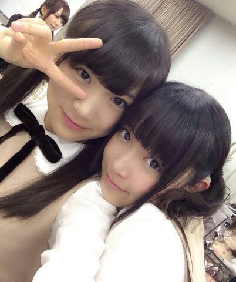

| 2014/02 01 Sat | ひめたん(*>ω<*)そ の402 |
ひめたんですー♪
前回の日記は
なんか暗くなっちゃってごめんなさい！
たくさんのコメント
本当にありがとうございました(´；；｀)
最近なんとなく気持ちが落ち気味だったんだけど
コメント読んでると
なんだか涙が止まらなくなって、すっきりした！
ひめたんの理想は
お人形さんみたいになること！
理想のアイドル像ってのもあって
ファンのみなさんには
華やかなところだけ見てほしいなって思ってて
あんまり悔し涙とか弱音とか
そーゆーのは
ほんとは隠しておきたいなって思うんだけどね
でもなんとなくこの前の日記は
そこを無しには伝えられなくて。
うーん今は難しいなー( ´ ▽ ` )
悩んでてもしゃーないし
目の前のことを
がんばってみよっかなって思うよー
これからもなかよくしてね＊＊
さて！
最近まともな日記を書いてなかったのね
いろいろ溜まってた報告＆告知祭りでも
開催しようかしら。
◎NOGIBINGO!2
#3は妄想シチュエーション
#4は実家デミー賞 でした！
#3は なかいさんコンビで
放課後の教室で(あなた)を取り合うってゆ
ちょっと贅沢なひとコマ。
贅沢なって自分で言うもんじゃないよね←
ほら、取り合いとか
しないしされないタチだからさ←

再現......
してみたけど
エア握手みたくなってる(´；；｀)
ちゃいます！(あなた)を取り合ってるの！笑
#4は実家デミー賞
我が家ルール
「カレーを食べるときはパジャマに着替える」
ってのがあるんですが
あれ？誰も共感してくれないの？
パジャマにカレーが飛んじゃう......
その通りですね(｀；ω；´)
じゃあどうしたらいいんだろう
前掛けすればいいのかな
でもそしたら 前掛けにカレーが飛んじゃう......
カレーって難しいのね(｀；ω；´)
◎月刊エンタメ
発売されました！
最新号で中３組が対談してます
理想のバレンタインも考えました
ぜひチェックしてみてくださーい＊＊
◎朝日新聞 語彙読解力検定
準２級合格しました＼( ^O^ )／
よのなか科の授業もまた受けてきたよー♪
◎anan
アイドル特集号的なのが発売されてて
我らが ななみん (橋本奈々未ちゃん)も出てるのー
それで中元姉妹って
紹介してくださってるよ( ^ω^ )◎
ちらっとだけどね！

まなつさーん(OωO )
この前久々に会って
ひめたーん会いたかったーって
ぎゅーってしてくれるまなつさん。
んーらぶ


んあ
この前似た写め載せたけど
ちょっと違うんだからね！！
見切れてる とまと (大和里菜ちゃん)
かわゆーす◎

 最近髪が伸びてきて切らんといけんなーと
最近髪が伸びてきて切らんといけんなーと
思ってるんだけどだるいしめんどくさいです。
ひめたんびーむでカットしてくれますか？
嫌です( ^ω^ )美容院行ってくださーい♪
ひめたんは何茶が好き？
麦茶！
麦茶とってもすきよー
麦茶ゆーてもいろいろあるけど
うちの麦茶は薄くもなく濃くもなく
普通の麦茶ですよー
 乃木どこのオープニングって
乃木どこのオープニングって
すしざんまいだよね？
あれ誰がやろうって言い出したの？ww
初夢回のやつだよねー
言いだしっぺは誰だったっけな(笑)
あんなにシンクロしたオープニングは
なかなかないかなーと思うんですけども
ひめたんあのコマーシャル
まだ見たことないんだよね(笑)
壊れかけのradioと卵かけのradio
どっちが欲しい？
卵かけのラジオ美味しそうーって
ばーかー(っ´ω`c)♪
とりりーぬさんは、、、飛べますか？
それともひめたんのように背面跳びですか？？
翼がないのできっと飛べません
背面......背面は無理なんじゃないかな
ベリーロールも足短いから多分無理だろうなー
なんなんだろうねあの鳥さん！なんもできんやん！
 姫たんてどこの国の姫なの？
姫たんてどこの国の姫なの？
そーいえばひめたんは
どこの国のお姫さまなんだろうか
そうだ国を作ってしまおう！
ひめたんの王国の名前(´；；｀)誰か教えてー
ひめたんのブログの
コメント欄下２ケタに46を踏んだ方へ
手書きでコメ返するコーナー
＼ ひめたん46 ／

そんなわけで
もう２月ですか。
やだなー時の流れってのははやいなー
２月といえばなんですかー
節分でしょー
バレンタインでしょー
乃木坂ちゃんのバースデーでしょー
あっ何か楽しそうかも！☆
(＊´・ω・＊)
コメント(533)
2014/02/01 23:30